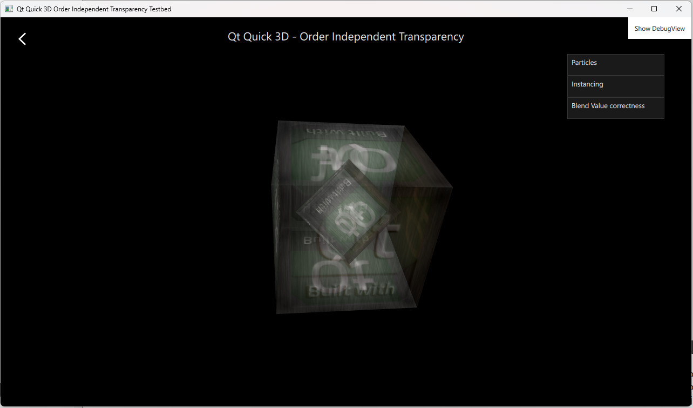

Qt Quick 3D - Order Independent Transparency Example
Demonstrates the order independent transparency in Qt Quick 3D.

The OIT example demonstrates how to enable order-independent transparency in Qt Quick 3D. It has multiple examples using the feature in different ways.
The examples
Particles example shows the use of OIT with transparent particles. Instancing example shows the use of OIT with models rendered using instancing. Blend Value Correctness example demonstrates the sorting problem with transparent objects and lets one enable OIT to fix the issue.
Controlling OIT
OIT is controlled by the SceneEnvironment object. The values are set based on the selection made in the user interface.
The oit method is by default set to OITNone to disable the feature, or one can set it to OITWeightedBlended to enable OIT.
environment: SceneEnvironment {
clearColor: "#000000"
backgroundMode: SceneEnvironment.Color
antialiasingMode: AppSettings.antialiasingMode
antialiasingQuality: AppSettings.antialiasingQuality
oitMethod: SceneEnvironment.OITWeightedBlended
}